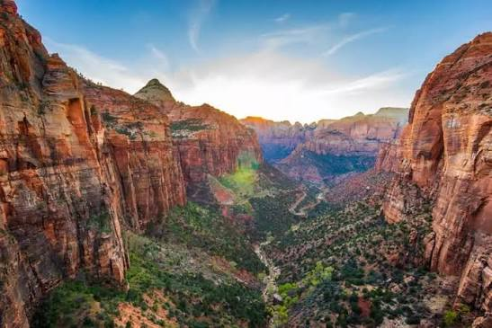

The mountains in Zion National Park.

Our website was created to help people learn more about some of the best places to visit in Utah. Utah is a great place for people who enjoy nature, sightseeing, and outdoor activities.
Utah has many beautiful places to explore, including national parks, mountains, lakes, and cities. We created this website to share some of the places that make Utah special.
© Maelyn Caton
Here is a great place to study more about utah Utah state